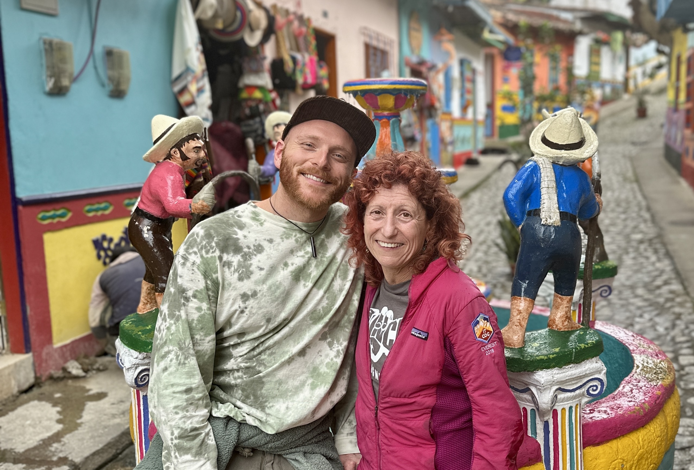
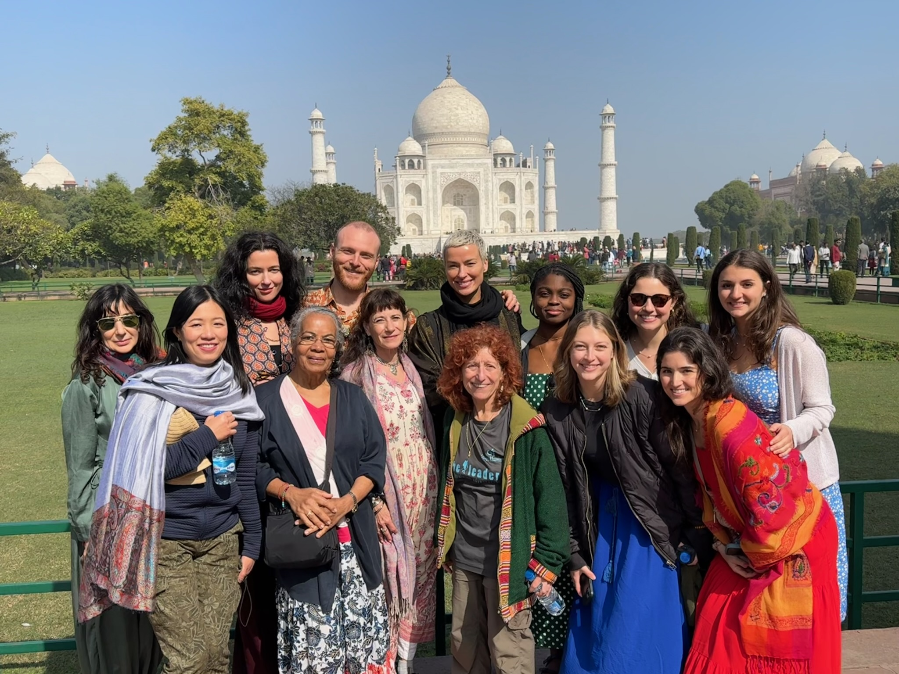
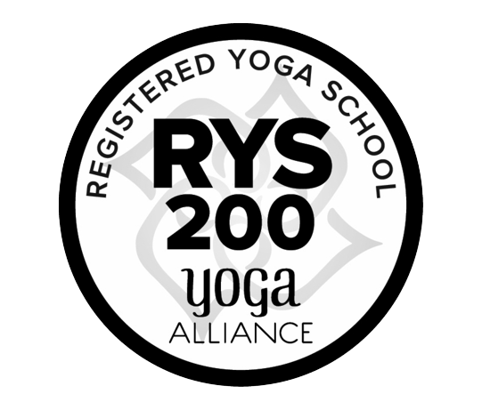
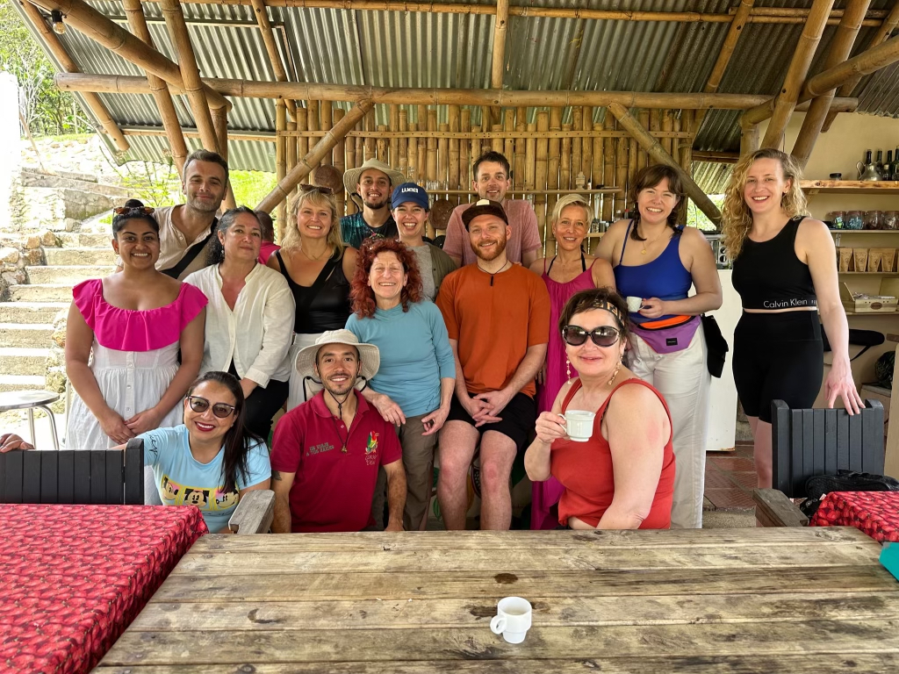

Humble Warrior
Trips to the Self
Trips to the Self

Humble Warrior, or Virabhdrasana in Sanskrit, is a pose named after Virabhadra, a powerful warrior in Hindu mythology. Vira means hero and bradra means friend. This warrior represents the destruction of evil, ignorance and delusion.
We named our business Humble Warrior because a warrior, to us, represents strength and bravery… and a Humble Warrior is a warrior who knows where they come from.
To us, yoga is not just a physical practice on a mat. It is meant to be something you take with you, and shared with your community.
We met in the park. Humble Warrior evolved organically from our mutual reverence for the practice, and also our insatiable love of play. It is our belief that these are not incompatible. That everyone can enjoy their practice, and find empowerment in their own body, in their own way. Our goals include inclusivity, equality, and equity for all ages, all gender identities, all colors, all ethnicities, all orientations. We challenge you to take an adventure, a trip to the Self.
A weeklong yoga retreat surrouned by nature in Kaziranga National Park, Assam, India.
This trip has something for everyone: see one-horned rhinos on safari, cruise down the Brahmaputra river, relax at the hotel spa, hike to a waterfall, explore the local silk weaving and tea plantations. Taste the local Assamese cuisine. And of course. we will do yoga in a private room, allowing you to go deeper into your practice. Each day of the retreat will include two yoga classes a day, pranayama, meditation, inspiring discussions on yoga philosophy, time for personal reflection and journaling, and lots of fun.
We will be accompanied on this trip by Achu Santhi. Achu comes from a well established family of yoga teachers in Cochin, India and his mother and father have been teaching Hatha Yoga at their shala for the last 30 years. You will have exposure to Achu's style of teaching as well as the Humble Warrior brand, an added bonus!
Hotel facilities include two meals a day, use of the hotel swimming pool and hot tub. The hotel also has a range of games, including badminton and volleyball, and a spa with a steam room and sauna. Rooms are single occupancy (1 bed) or double occupancy (2 beds).
Price includes two meals a day, yoga and all excursions save for any add-on spa services. We wil provide 1 van to take everyone to/from GAU Airport. Airfare is not included.
You will need to bring your own mat, but we will supply blocks, straps, and pads for your knees. Please bring anything else you like to use while practicing. We will do yoga in a private room at the hotel; we have booked the room for the entire length of our stay.
Price: $3000, double occupancy.
$2500 early bird discount, until Dec 15, 2026.
Return clients receive 10% off the above price.
Single occupancy supplement, $500 extra.
Cancellation Policy:
100% refund til Dec 15, 2026.
50% refund til Jan 15, 2027.
No refund after Jan 15, 2027.
Get in touch for more info!

Train with us in India and New York to become an certified yoga teacher. A multi-location teacher training with Shane Allen and Lillian Cuthbert, as well as guest teacher Aksharanand A S.
Training will take place in 3 locations.<
We will start with a week-long immersion in February in Mumbai, India.
We will then move to Assam, and training will continue on the Assam retreat.
We will conclude with weekends in NY.
Mumbai, Feb 21 to 28
We will meet you in Mumbai, specifically our favorite neighborhood, Bhandra West!
We will spend that first week on fundamentals: anatomy, philosophy, history, etc.
You will be responsible to book your accommodations, and food, but we can help you book that.
February 28th, Lillian and I will leave for Assam, and you have a free day.
Assam, March 1 to 8
On March 1, you will follow us to Assam for the retreat.
We will continue study on the retreat. This will be a time to really absorb what we've been learning, and feeling it in your body.
NYC, March to May
After the retreat, we come back to New York, and we will meet weekends for you to practice teach, and set you up for auditions, next steps etc.
Aksharanand A S
Aksharanand A S holds an Advanced Teacher Training Certificate (ATTC) in Sivananda Yoga studies and studies of Vedanta (Non-dual Philosophy). Achu has a special talent for training Yoga students, with his charismatic personality and warm presence. He has extensive experience in Hatha Yoga practice and Yoga philosophy. Achu comes from a well established family of yoga teachers in Cochin, Kerala and his mother and father have been teaching Hatha Yoga at their shala for the last 30 years.
--> <Payment plan available. Airfare not included.
Upon successful completion of the training, we will help you find a teaching position, if you would like to becoem a teacher.
Please contact us for more info, or to set up a call with us!


Shane is an experienced yoga teacher (E-RYT) with a speciality in meridian yoga therapy, a certified Pilates mat instructor, and an Acu Detox Specialist (ADS) working in harm reduction for the city's most overlooked neighbors. Additionally, he’s continuing his study at Hunter College as well as the AASECT recognized Sexual Health Alliance (SC). Shane originally found his way to yoga as a way to cope with chronic panic attacks. Having just moved to the city for acting school, he’d learned the body tells a story. Yoga taught him to listen. In his classes, Shane hopes to charm his students to meet challenges with honor, humility, and humor.
For upcoming work shops, retreats, and more you can follow him at:

Lillian found yoga at an early age and immediately recognized its many benefits. She fell in love with the practice and the way it enhanced her life both physically and mentally. She completed the 200-hour training at Yoga Vida in 2018 and further studied under the guidance of her mentor, Sangeeta Vallabhan. She currently has a E-RYT 500 Yoga Alliance designation.
Lillian’s classes are athletic and challenging, yet balanced, safe, and accessible to all. She believes that a mindful yoga practice extends beyond the mat and infuses everything we do. With that in mind, Lillian aims to have people leave her classes feeling stronger, calmer, and more connected to the world around them.
In 2018, Lillian climbed Mount Everest, completing the Seven Summits. She has run the New York Marathon ten times, has qualified for and run the Boston Marathon twice. She is the treasurer of The Practice Coalition, a non-profit dedicated to providing yoga for trauma to survivors of domestic and sexual violence and to taking care of the teachers who offer it. She is also the co-founder, with Shane Allen, of Humble Warrior, through which she co-organizes and co-leads retreats and teacher trainings around the globe. She holds a PhD in Electrical Engineering.

"Imagine going on a fun trip with your best friends! That’s the feeling you get on Humble Warrior’s yoga retreats thanks to Shane and Lillian’s intentional programming. Add delicious food and well-curated activities, and it’s an experience not to be missed." -- Anush
"These Humble warriors created an all-inclusive travel experience with yoga/meditation, excellent food, site-seeing and adventure! In India, we went white water rafting on the Ganges, visited the Taj Mahal and walked local areas and shopped. Lillian & Shane are a perfect complement to each other and are well organized and thoughtful. I was able to relax in a foreign country knowing I was in good hands." -- Wendy
"I am more of a solo traveler and don’t generally go on group trips. But knowing Lillian and Shane, I knew it would be a good time, and I wasn’t disappointed! The week we spent in Colombia was incredible. Great yoga and meditation, but also a fun week of activities and adventuring. The crowd they attract is also diverse and fun, and I look forward to going on another one of their retreats!" -- Martin